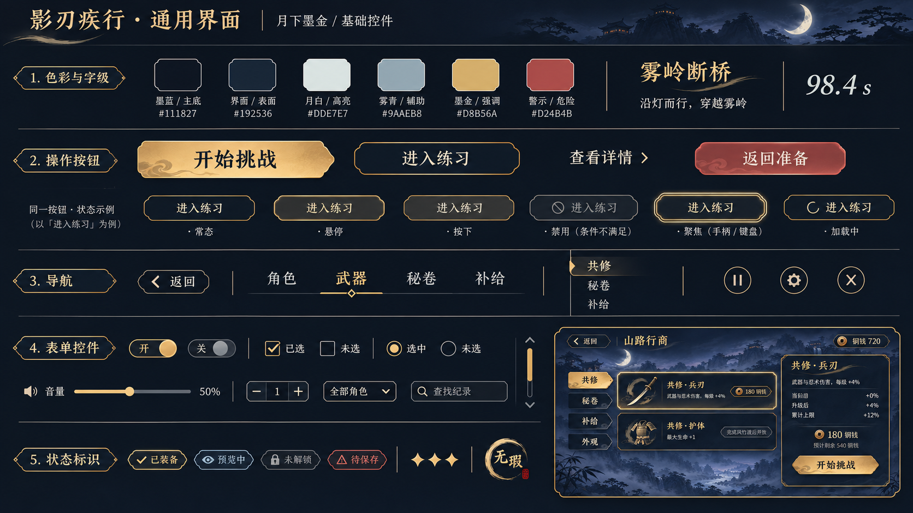
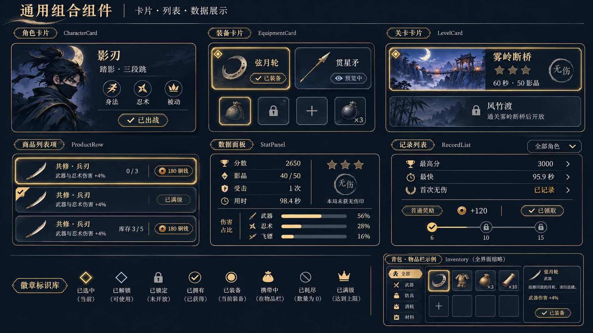
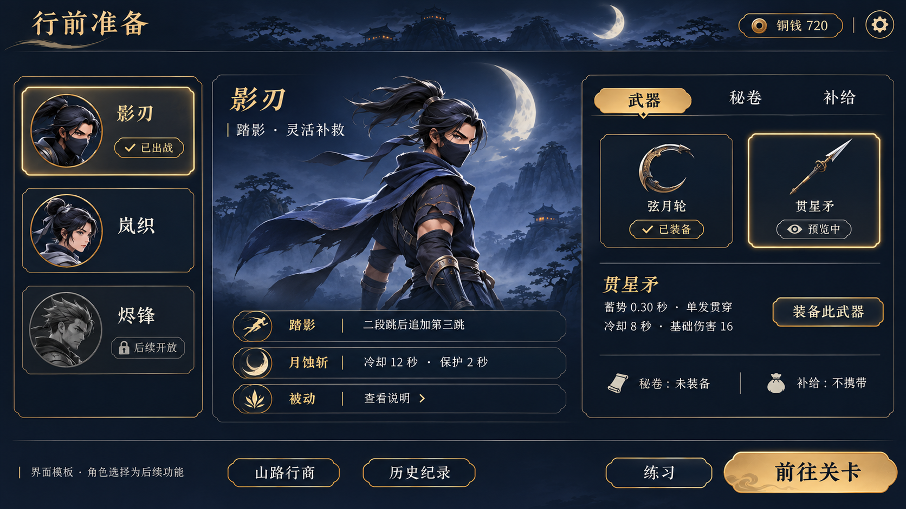
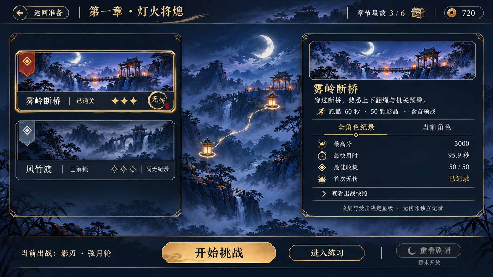
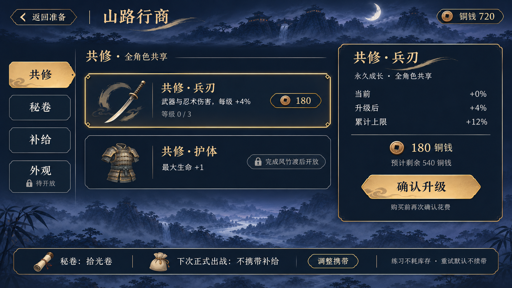
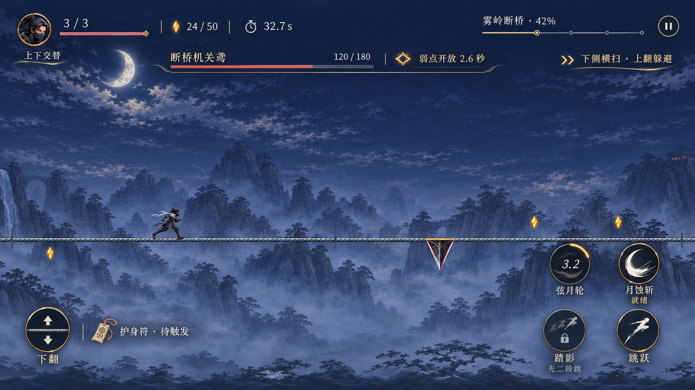
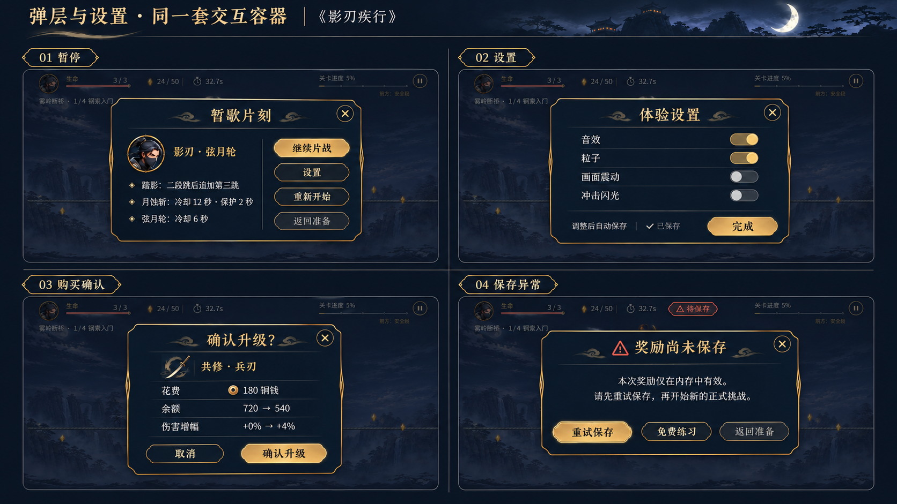
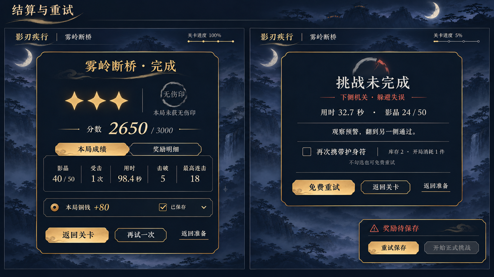
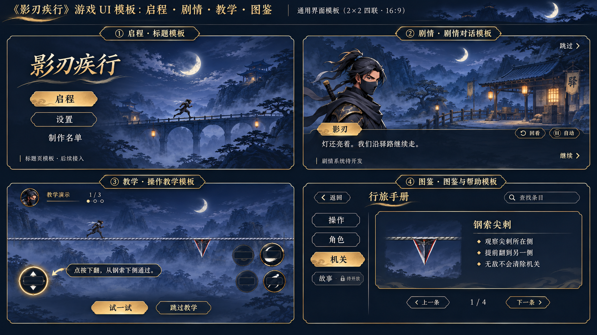
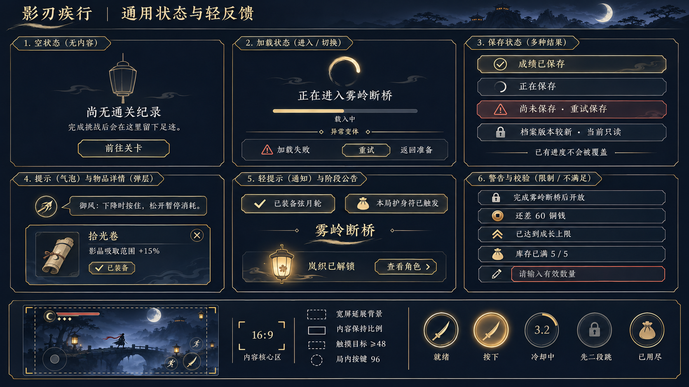

以月夜雾岭、墨蓝面板、月白信息与克制暖金统一界面。后续 UI 开发优先复用这些通用类型，再通过组合和变体扩展。点击图片查看完整原图，可用方向键翻页。

按钮、导航、表单、字级与色彩。
朱砂值与普通返回样式以规范为准。

角色、装备、关卡、商品、纪录、奖励与背包。
成长与库存示例分别绑定对应商品类型；星形需加强填充辨识。

角色选择、能力与装备详情，预览和装备分开。
角色选择与专属立绘为后续模板；武器文字取实际配置。

驿灯路线、关卡状态、纪录与挑战入口。
3/6 是可达示意，章节目标仍为15；总目标从目录读取。

共修、秘卷、补给、详情与携带摘要。
按真实档位、余额、库存、所有权显示；外观保持待开放。

悬浮信息、一左四右、冷却与被动道具。
几何按既有ScreenLayout；首领弱点与攻击预警为分开的状态示例。

暂停、四项设置、购买确认、保存异常。
购买确认只在商店；模型错字由Godot原生文案替换。

三星与独立无伤、成绩、奖励、失败与免费重试。
奖励金额为排版示例；再次携带为后续功能，未实现不启用。

启程、对话、操作教学、图鉴与帮助模板。
本板为后续模板；教学的障碍侧别必须与指引对应。

空态、加载、保存、提示、解锁、校验与安全区。
无真实进度时使用不定条；缩略图装饰摇杆不纳入本游戏。